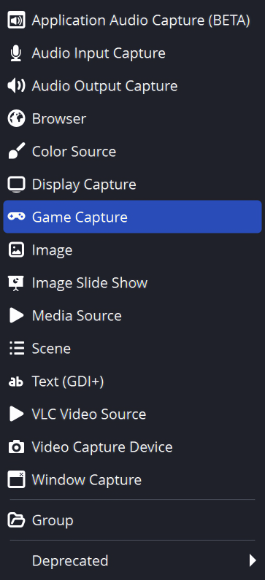
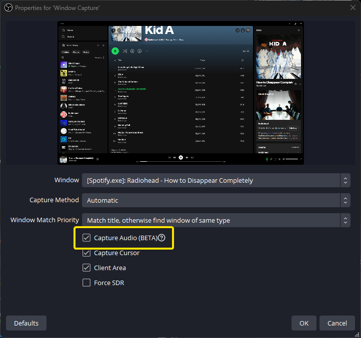
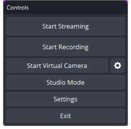

FROM SETUP TO TROUBLESHOOTING
Stagelight in OBS
A starting soon scene with a countdown, optional music, and a clean switch to gameplay.
Set up the scene
Prepare Stagelight
Add your title, logo, and countdown. Keep the browser in its own window. Turn off Full screen to make window capture easier.
Add a capture source
In OBS, create a starting soon scene. In Sources, click +. On Windows choose Window Capture; on recent macOS choose macOS Screen Capture. Select Stagelight.

Screenshot: OBS documentation. Click to enlarge. Your version may differ. Capture music once
On supported Windows versions, Window Capture can include Capture Audio. Otherwise use an application audio source. On macOS 13+, use the supported macOS screen or audio capture source. Do not capture the same music twice.

Screenshot: OBS documentation. Click to enlarge. Your version may differ. Record before broadcasting
Click Begin presentation in Stagelight, then Start Recording in OBS. Play back the file. Confirm timer, music, and scene framing before going live.

Screenshot: OBS documentation. Click to enlarge. Your version may differ. Switch to gameplay
Stop Stagelight with Esc, then switch scenes in OBS. Check that its music has stopped in your recording. A scene change alone may leave browser music running.
Common fixes
Black screen or wrong window
Confirm the source is visible and above any opaque source. Re-select the Stagelight window after changing full screen or reopening the browser. Use window or screen capture for Stagelight, rather than Game Capture.
No music in the recording
First check playback in Stagelight. Then check the OBS mixer is moving and unmuted. If meters move but the recording is silent, check which audio track is selected for output.
Echo or doubled music
Pause duplicate players. Check whether both desktop audio and application audio capture the same browser. Use one capture path for the music.
Lag, stutter, or a frozen background
Compare the browser with a local recording. Close busy tabs and try another Stagelight design. Check OBS performance warnings before changing stream quality.
Sources: OBS quick start, Windows application audio, Mac audio capture. Full Stagelight-to-OBS broadcast testing is not verified.
Still stuck?
Tell us what failed and whether it also happens in a local recording.
Prepare a support email →